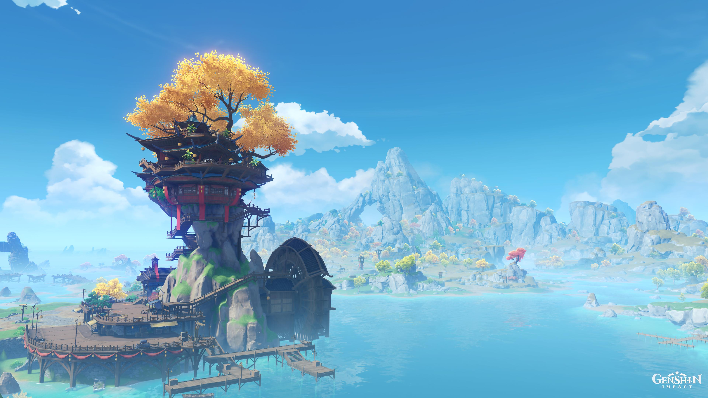
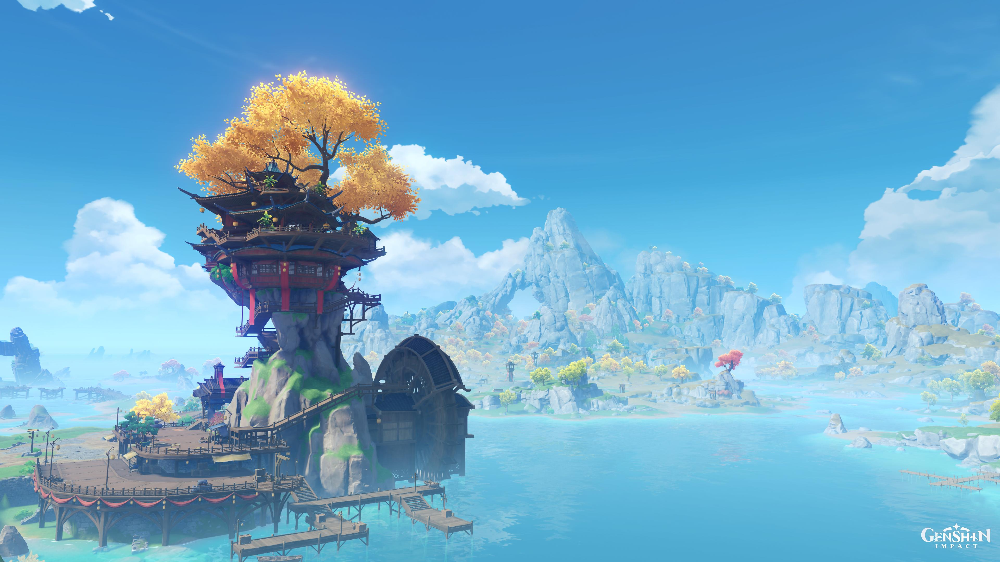

Genshin Impact is a game developed by Mihoyo, a company based in Shanghai, China. It is an open-world action-based role playing game set in a fictional world called Teyvat.
Nations in Genshin Impact are heavily influenced by real world countries. Liyue is inspired by China where many locations are mirrored off of real-world Chinese scenery and attractions.